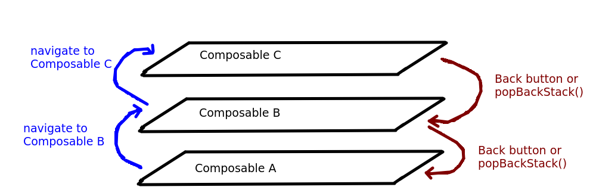

This week will cover the use of the Navigation API (NavHost, NavGraph, NavController) to do basic navigation. Next week we will look at how we can create an App Bar and menu to enhance our navigation.
So far we have just looked at simple Android apps with a single screen. However, most real-world Android apps will feature multiple screens allowing the user to perform multiple operations. For example one screen might include a map, another screen might include a form allowing the user to add a new point of interest, and a third screen might show the app's settings.
How is this done? The previous approach was to use multiple activities for each screen, so that a secondary activity would be launched from the main activity. However it's now recommended to use the Android navigation API to navigate from one screen to another within a single activity. Luckily, Jetpack Compose works very well with the navigation API. With the navigation API and Compose, you define different composables in different screens, and host them in a NavHost - see below.
The navigation API consists of a series of classes which work together to enable navigation. It is a separate library from Compose itself so must be included as a dependency (see the documentation).
[libraries] section:
androidx-navigation-compose = { group = "androidx.navigation", name = "navigation-compose", version.ref = "navigationCompose" }
[versions] section of the version catalog, add the specific version:
navigationCompose = "2.8.7"
build.gradle.kts, link in the library in your dependencies section:
implementation(libs.androidx.navigation.compose)
The navigation API consists of these key classes:
NavHost: a "host" composable for your navigation. This contains all the composables for each screen within it.NavGraph: a data structure representing the different navigation destinations, known as routes. Each route has a name (in this respect, they are not unlike routes in web frameworks such as Express, for those of you who are familiar with web development).NavController: class to control the navigation. With the NavController you can navigate to other routes.You need to make these imports:
import androidx.navigation.compose.NavHost import androidx.navigation.compose.composable import androidx.navigation.compose.rememberNavController
NavController:
val navController = rememberNavController()This will setup a navigation controller and remember it if the screen rotates.
Surface, create a NavHost to host the composables:
NavHost(navController=navController, startDestination="mainScreen") {
composable("mainScreen") {
MainScreenComposable()
}
composable("settingsScreen") {
SettingsComposable()
}
}
This sets up a NavHost associated with the given NavController. We specify a lambda to set up the navigation graph. Note that the navigation graph is setup using a series of calls to composable() each of which takes two arguments: the route of that composable plus a lambda containing the appropriate composable for that route. So here we are specifying that:
mainScreen route corresponds to the MainScreenComposable();settingsScreen route corresponds to the SettingsComposable();NavController to navigate to a particular composable using its route, e.g:
navController.navigate("settingsScreen")
would navigate to the settingsScreen route, corresponding to the SettingsComposable. This might run, for example, in response to a button press or selecting a menu item.This is discussed in the Android documentation; see "Expose events from your composables".
An application making use of navigation would probably navigate to another composable by means of a button press or menu selection. How might we implement this? Let's say a press of a button from Composable A causes navigation to Composable B. We have a problem because the NavController is not accessible in Composable A: only the top-level, parent composable can access the NavController. So we can't directly navigate to Composable B from Composable A. So how can we do it?
NavController to Composable A. However this makes Composable A coupled to the NavController which is not ideal - we may, for some reason, want to change the navigation mechanism, and if we had to do this in all the child composables rather than just the parent, it would increase the maintenance effort.Surface composable (which has access to the navController), but pass it into Composable A as an argument. When the button is clicked in Composable A, it will run the callback (because it was passed into Composable A) without having any direct knowledge of what the callback is doing. Thus, Composable A becomes loosely coupled. It's not coupled to the parent composable because it doesn't have any direct reference to the parent's variables. It just has a callback, which could come from any application, and blindly calls the callback when the button is pressed.
So, in a callback approach, Composable A might look like this:
@Composable
fun ComposableA(addPersonCallback: ()->Unit) {
Button(onClick = { addPersonCallback() } ) {
Text("Add Person")
}
}
Note how it takes a callback as a parameter, and calls that callback when the button is pressed.
The parent composable could then pass the callback in to ComposableA, as follows:
@Composable
fun ParentComposable() {
val navController = rememberNavController()
NavHost(navController=navController) {
composable("mainScreen") {
ComposableA(addPersonCallback = {
navController.navigate("addPersonScreen")
})
}
composable("addPersonScreen") {
ComposableB()
}
}
Note how when we set up ComposableA we pass in a callback which when called (when the button in ComposableA is pressed) we'll navigate to the composable with a route of addPersonScreen.
When using the Navigation API, each new navigation is added to a stack of screens (you all did stacks in Data Structures: see the COM421 notes for revision). Each time we navigate to a new composable, a new entry is added to the back stack, and when we press the "back" button, the top entry is removed from the back stack and we return to the previous composable.
The back stack is shown below:

This has some consequences for usability. For example, imagine a user starts by viewing Composable A and they then navigate to Composable B. What if we wanted to return the user to Composable A by clicking a button on Composable B? There are two ways we could implement this:
popBackStack() method of our NavController, e.g:
navController.popBackStack()So if we wanted to navigate back to Composable A from Composable B when the user clicks a button, we could pass a callback into Composable B (in a similar manner to the callback example given above) which calls
popBackStack().
The documentation here describes a common problem in navigation. As discussed in the documentation, if we have three composables on the back stack (A, B, and C) and the sequence of navigation is A to B to C, then back to A again, we might want to pop both B and C from the back stack when the user returns to A. How can we do that? We could call popBackStack() twice. But what if the user could also navigate from A to C, in which case we would only need to pop once. We clearly need some way of removing all composables above composable A. As the article discusses, we can use popUpTo() to remove everything from the back stack up to the composable passed in as an argument. To do this we must supply a lambda as the final argument of navigate(), containing the popUpTo() call. So for example:
navController.navigate("composableA") {popUpTo("composableA")}
will remove all composables from the back stack above the latest copy of composableA.
Will appear here.